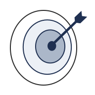

CAPA
UX-UI Design Study
Overview
The Canadian Association for Photographic Art (CAPA) is a national organization of Canadian Camera clubs and individual Canadian members who have a common interest in photography. It's also the representative of the International Federation of Photographic Art(FIAP) in Canada, which holds international photo competitions, annually.
Compared to other FIAP representatives, CAPA's website has an outdated design and doesn't promote its features decently. In this study, I reviewed the whole user journey but focused on four of the main flows for redesign purposes.
-
Mission
To audit CAPA's website, review the whole user journey, and suggest design overhauls to improve user experience and have the audiences revisit and contribute to CAPA.
-
 Hats Worn
Hats Worn
- I performed user research, market analysis, and heuristic evaluation, crafted persona, created high-fidelity mockups, designed UI kit, and finally delivered responsive mockups for four flows.
-
 Tools
Tools
Adobe Illustrator, Photoshop & Figma for Design
-
 Timeline
Timeline
2 Weeks | Jul 2023, from Audit to Presentation
-
 Team
Team
Solo work
-
Platform
Responsive Website
Empathy Through Personal Lens
I have a passion for art photography and when I moved to Canada, I wanted to connect with a network of photographers. In my home country, I was a member of FIAP (the Federation Internationale de L’Art Photographique), and I actively searched for a FIAP representative in Canada to continue my membership.
It was disappointing to see that the website presented by CAPA, which represents FIAP in Canada, had navigational challenges and a design that didn't effectively showcase the artistry of photographers. Although this dampened my initial excitement, it triggered me to think about redesigning the website.
It became an empathetic bridge to the experiences of other photographers who were facing the same challenges. This personal lens highlighted the importance of a user-friendly platform that not only meets functional needs but also resonates with the artistic preferences of its users. It became an opportunity to create a platform that understands the passion, struggles, and triumphs of photographers within the CAPA family.
Understanding the Goals
The first step was looking through CAPA's lens and finding out about their organizational goals. With a clear understanding of their goals, my new UX design aimed to seamlessly connect photographers, foster community engagement, and showcase CAPA's various features, from competitions and events to educational resources and sponsor relationships. The user-centric approach prioritized accessibility, responsiveness, and user engagement, creating a dynamic online platform that reflects the vibrant and collaborative nature of the CAPA community.
Encourage to join
Creating an engaging onboarding process for new members, introducing them to key features and benefits of joining CAPA, and providing a straightforward and user-friendly membership registration process can motivate site visitors to join CAPA.
CAPA competitions
The aim is to encourage participation in CAPA competitions by promoting and facilitating them. This can be done by highlighting ongoing and upcoming competitions, providing detailed information about the rules, themes, and submission guidelines. Additionally, showcasing the winning entries and results from past competitions inspires members to actively participate and submit their work.
Find a local club
Provide a searchable directory of local clubs with contact information to help users locate and connect with local photography clubs affiliated with CAPA and encourage collaboration and networking among local photography enthusiasts.
Introduce sponsors
To show appreciation for their support of CAPA, it's important to dedicate a page and section to showcase its sponsors. This will acknowledge their contribution and can help foster a positive relationship between CAPA and its sponsors
Speaker Series
Provide technical tutorials and professional insight for members through online sessions presented by professional Canadian photographers.
Camera Magazine
Provide members with digital access to archives and the latest issue of the magazine which showcases original work by CAPA members, competition winners, etc.
News
Keep members and visitors informed about the latest updates and news related to CAPA. Highlight significant achievements, announcements, and industry news.
Judging Courses
Provide information on upcoming courses, including dates and locations, and streamline the registration process for interested participants.
Heuristic Evaluation
The website's information architecture is confusing and lacks a clear hierarchy on all pages. This makes it difficult for users to find the information they need quickly and easily. Additionally, there is no clear call to action, which makes it hard for users to know what to do next. This can lead to a high bounce rate and a low conversion rate.
Each action requires multiple unnecessary clicks, which causes confusion and frustration for users. They should be simplified as much as possible to reduce friction.
Furthermore, considering the user persona, the visual design the visual design doesn't meet aesthetic standards. The website should be designed with photographers and artists in mind to ensure that it meets their needs and preferences. Additionally, the UI design lacks branding elements, which makes it difficult for users to identify the website and differentiate it from competitors.
Finally, the website isn't completely responsive, which means that it doesn't adapt to different devices' screen sizes and resolutions. A responsive design is essential to provide a seamless and also inclusive user experience and increase engagement and conversions.
Mockup
Header & Footer
In the original design, the header includes three sections, the first of which is not visible enough. Also, the navigation lacks current page status which makes it hard for the visitor to explore the site. Header is also crowded with components that can be arranged more clearly and with a better hierarchy.
Here I demonstrate the original design(top) and the redesign(bottom), for the header:

- I tried to remain committed to the branding element in my redesign process. However, I modified the logo for better clarity and to make it scalable to smaller screen sizes.
- In designing the navigation menu, I followed a similar order to the homepage. Users can now see the current status.
- I made a separate section for the CTAs, and I distinguished them from other elements by using a different style.
Here I demonstrate the original design(top) and the redesign(bottom), for the footer:

- Following the same rules in my redesign, I created a new footer. Also, by changing the wording in the footer menu, made it cleaner.
- I moved the Facebook link into the footer to reduce the elements in the header. By styling it somewhat similar to buttons, it's still attention-grabbing.
Home Page
While the homepage covers the most important features of the website, it only includes random images and headings without any further visual context. This makes it hard for users to understand what the website is about and what it has to offer. To engage users and encourage them to explore the rest of the website, it's essential to provide a clear value proposition on the homepage. Therefore, I redesigned it by defining each feature in a separate section, providing appropriate visual context and a clear call to action.
Here I demonstrate the original design(left) and the redesign(right), side by side:

- A prominent feature of my redesign is the cover photo that appears on all pages. It serves as a platform to showcase the artwork of CAPA members, where appropriate. The members are an essential aspect of this community, and that is why I have dedicated the cover section on the homepage to encourage people to join CAPA.
- Competitions and the carousel of winners’ images are now combined to give a better sense of the concept. Also, this is what most of the audiences are looking for in CAPA, so it is located in the hero section. Its design is inspired by a photo frame and is intended to be simple yet elegant.
- As a non-profit organization, CAPA relies on the sponsors and supporters. That is the reason I dedicated a noticeable section to them and their products.
- Three features with somewhat similar hierarchies are now combined in one section. Still, they are easily identifiable by the headings and icons.
- The magazine has a clear CTA, now.
- Judging course audiences constitutes a minor percentage of visitors on the CAPA website. However, it is important enough to be featured on the home page, which is why I placed it in the last section.
Following designing for the desktop, I made it responsive to mobile view:
Competition Page
Similar to other pages in the original design, the competition page lacks a clear hierarchy and CTA. In my redesign, I focused on these elements along with creating a seamless user experience for a photographer who wants to participate in a competition.
Here I demonstrate the original design(left) and the redesign(right), side by side:

- The banner image provides context for the competition theme without overwhelming the user with too many examples.
- All headings are equally important on this page since they describe the competition's rules and criteria. So I considered the same hierarchy level for them. But to keep it more understandable, I separated them with horizontal lines. Also, I created another navigation for these sections, which remains sticky and on top of the page. This helps guide the user through all the sections easily.
- CTA is located at the very end of the page to ensure the user has gone through all requirements and criteria before entering the competition.
Following designing for the desktop, I made it responsive to mobile view:


Club Membership Page
Club membership is a crucial aspect of CAPA. However, the page lacks a clear structure and visual appeal. Like other pages, it is missing a visual identity, which makes it difficult for visitors to recognize the site instantly. To ensure design consistency, I created photography-themed icons for use on this page, homepage, and other relevant pages.
Here I demonstrate the original design(left) and the redesign(right), side by side:

- I designed a cover for this page that showcases the website's theme and displays the page title. This cover can be used on other pages where a photo from a member artist is not applicable.
- I updated the page title to "Club Membership" which is more appropriate considering this content on the page.
- The club membership benefits are thoughtfully arranged and visually separated into different sections, each with its unique icon that makes it easily recognizable. This redesign not only enhances the aesthetic appeal of the interface but also makes it easier for users to quickly scan through the benefits and identify them.
- A clear call to action is placed on the hero section to encourage photographers to become club members or renew their club membership. To ensure its visibility, I checked the heatmap for this page:

Following designing for the desktop, I made it responsive to mobile view: